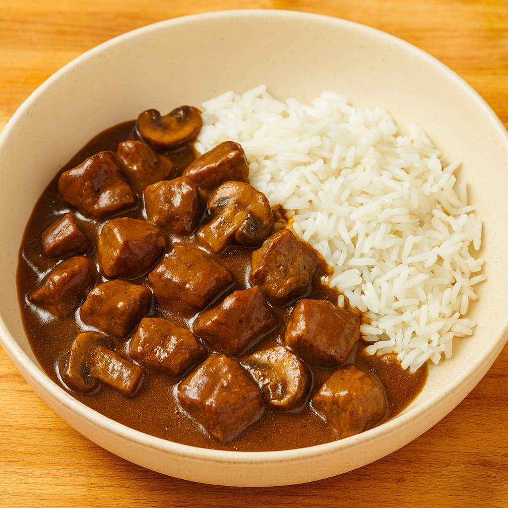

Home
Slow Cooker Beef Tips and Gravy

This crockpot beef in gravy works wonderfully over mashed potatoes, egg noodles, or rice. For a warm and filling Sunday dinner, this fork-tender beef dish can't be beaten.
Ingredients
- 2 teaspoons oil
- 2 pounds beef steak tips
- 1/2 teaspoon salt
- 1/2 teaspoon granulated garlic
- 1/2 teaspoon Cantanzaro herbs or Italian seasoning
- 1/4 teaspoon freshly ground black pepper
- 1 cup beef bone broth
- 1 (10.5 ounce) can cream of mushroom soup (98% fat-free 50% lower sodium)
- 1 (0.87 ounce) packet brown gravy mix
- 8 ounces button mushrooms, cleaned and quartered
Steps
- Gather all ingredients.
- Heat a heavy cast-iron pan over medium-high heat and add the oil. Season the beef tips with salt, garlic granules, Cantanzaro herbs, and pepper.
- Brown the beef in batches until all sides are seared. Move the steak tips into a slow cooker.
- Mix together the beef bone broth, soup, and gravy mix powder; pour the mixture over the beef. Add the mushrooms to the slow cooker.
- Cover with the lid and cook on Low for 8 hours or on High for 5 hours.